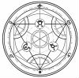
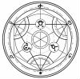

[團務與邀約] [RISUS][已額滿]鍊金工坊的復興
千幻雪舞 小學部畢業生
| 上台說話的大中小簡繁發表於 12-5-2012 10:05 AM 只看該作者  [RISUS][已額滿]鍊金工坊的復興[RISUS][已額滿] 鍊金工坊的復興 『深藍之炎』鍊金工坊曾經是雷亞特城最大和信用評等最高的鍊金工坊， 現在，因前任工坊主的意外病逝，使得深藍之炎之前接下訂單皆無法如期完成， 深藍之炎必須支付鉅額的違約金，因此，深藍之炎的信用評等被鍊金公會降到Ｄ級， 並且因深藍之炎的信用評等降低，深藍之炎原有的鍊金原料的供應商也解除與深藍之炎簽訂的供貨契約。 而剛接任的[深藍之炎]鍊金工坊的普莉希絲‧馮‧諾曼需要面對鍊金工坊的現況是： １深藍之炎目前沒有資金：因為深藍之炎的原有資金拿去償還鉅額的違約金 ２深藍之炎的信用評等不能再被降級：若信用評等再被降級，深藍之炎就會被鍊金公會撤銷營業許可。 ３其他大型鍊金工坊的打擊 ４找尋新的供貨商 為了解決以上情況你們被普莉西絲‧馮‧諾曼 你們成為深藍之炎的 註:貨幣單位為索爾 團名:鍊金工坊的復興 規則:RISUS＋本房特別規則 平台:論壇 人數:4~6人 丟骰系統：線上丟骰(http://www.wasabistudio.ca/scripts/dice.php?c=鍊金工坊) 目標:再次成為信用評等AAA級的鍊金工坊 特別規定: 所有鍊金動作除進行藥劑鍊金外，必須有  鍊成陣才能進行鍊金動作 鍊成陣才能進行鍊金動作藥劑鍊金需要魔藥釜 才能進行貴金屬及永恆類藥劑練成 ＴＮ＝２６ 有副作用的藥劑、治療一般外傷的藥劑以及提煉金屬和原物料 ＴＮ＝５ 刻畫上級鍊成陣，必須具有鍊金特徵，同時具有以下這些材料 1秘銀50g 2魔力水晶20顆 3純淨水 4上級鍊金陣圖譜 5黑曜石板 ＴＮ＝１８（功能:降低一半目標值） 工坊狀態: 工坊只剩下一間空屋，什麼鍊金設備都沒有 資金:25000(德帝‧卡爾尼友情捐助) 信用評等:Ｄ 供貨合約：與小型自營戶供應商史提夫．麥塊簽訂供貨合約（鍊金原料供應量非常不穩定，但有大優質煤礦供應） ＝＝＝＝＝＝＝＝＝＝＝＝＝＝＝ 空白角色卡 角色姓名: 性別: 年齡: 種族: 職業: 技能(特徵):(總共十五點，至少要有三項特徵，特徵上限是六) 種族特長:(不計算在十五點特徵內，是玩家種族的「一個」特有專長，人族特長為語言) 道具:(5樣) 金錢:10萬索爾(選擇此項者減2樣道具) 外貌:(文字或圖像) 角色背景:(要寫是怎麼被普利西絲拉來當店員的) [ 千幻雪舞 於 1-11-2013 08:38 PM 重新編輯過 ] |


 已簽到角色
已簽到角色